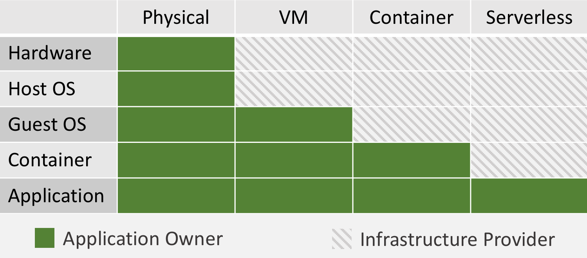

Serverless is an evolutionary paradigm in cloud computing where you run your applications and services without explicitly provisioning/managing the servers (and hence serverless). With the serverless offering, cloud providers are finally delivering on the true promise of the cloud — infinite capacity and automatic scaling with no scripts/configurations to manage. In this model, cloud providers take full responsibility of operating and managing the infrastructure, in turn helping businesses focus on their high value application.

The cloud providers offer serverless compute time by providing “Function as a Service” (FaaS). With FaaS, every time your code is invoked, the FaaS provider runs your code on a server that is provisioned, optimized and patched with the latest updates.
Why Serverless?
Whether you are a Developer, DevOps or Product owner you want to evaluate serverless for building and architecting your next cloud application.
Developer: Just write code
-
Write code and deploy your service without ever having to think about the number of machines to provision.
-
High availability and horizontal scaling is out of the box with no additional architectural/configuration changes.
-
Polyglots choose the optimal language for the problem at hand — Go, Javascript (NodeJS), Python, Java, C# where you don’t have to worry about installing runtimes/dependencies.
-
Cost of operating a non-prod environment is very low as you never pay for idle time. Combined with scale on demand, this should enable developers to rapidly iterate on their new changes.
DevOps: Zero administration
-
No patching/downtime notices — Imagine being 100% compliant with meltdown/spectre while everyone is busy taking servers down, patching them.
-
No more provisioning of resources based on current, peak and anticipated loads. No midnight pagers to handle surge of traffic.
-
Run your scheduled cron jobs without the overhead of standing up/maintaining the one-off machines.
Product Owner: Agility and improved productivity at reduced costs
-
FaaS has utility pricing, you pay only when your resource is used and not when resources are provisioned. This could mean significant savings for your business as you will no longer pay for idle resources and/or orphaned VM’s/containers.
-
Developers and DevOps have a few less things to worry about leading to accelerated delivery.
-
Your application is ready to scale on Day 1.
How to use Serverless?
Applications: Moving from servers to serverless is in some ways similar to the move from on-premises to cloud. The new paradigm brings certain unique characteristics and hence certain application workloads work better than others when it comes to migrating to serverless:
-
Scheduled cron jobs — this is a low hanging fruit as your organization ramps up on serverless.
-
Mobile applications that have a server side component are great candidates for serverless as they allow you to scale from 1 request per second to planet scale w/o any upfront commitment/planning.
-
Modern web-based applications (aka ReactJS/AngularJS) can leverage serverless wrapped around an API where you get instant scalability and fault tolerance built into your application.
-
Event driven architectures go hand in glove with FaaS.
Management: While the premise of serverless is fantastic, you will find that you are stitching together a lot of pieces while writing your first service in serverless. While you are at it, you will also find that the steps are very specific to your cloud provider, so there is the concern about vendor lock-in. As serverless adoption is growing, the ecosystem around it is maturing to solve some of these intricate problems. Solutions are available from emerging startups as well as open source projects alike.
The future of cloud computing is serverless. We will continue to see this space evolve where more architectural patterns will emerge to support more types of workloads. Organizations that have adopted serverless are seeing significant increase in agility, cost savings as well as operational benefits. If your organization is already in the cloud, it is in your best interest to start identifying and piloting workloads to leverage serverless. For organizations that are yet to make it to the cloud, this could be your opportunity to leapfrog the technology curve and rearchitect your on-premise solutions to leverage serverless.